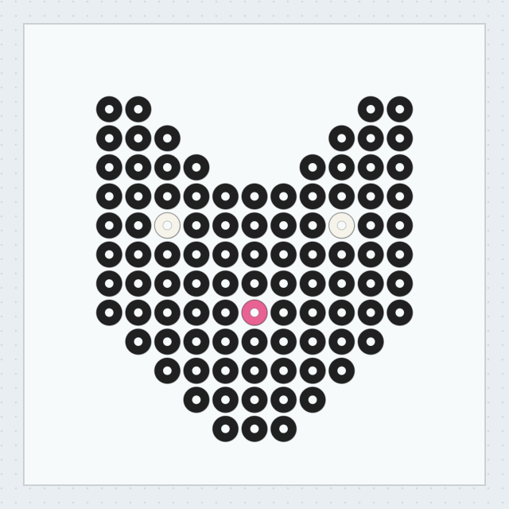

beadpatternmaker
.io
Photo in / coded chart out
Perler bead
pattern maker
.
A colour code in every cell.
A print-ready PDF at the end.
Grid
12–80 beads
Palettes
Perler · Hama · Artkal
Output
PDF · PNG · CSV
SPECIMEN / 015
15 × 13

LITTLE CAT / 3 COLOURS
97 BEADS
26 colours per palette